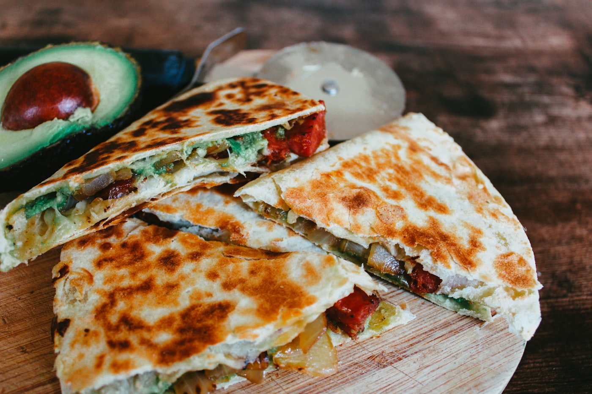
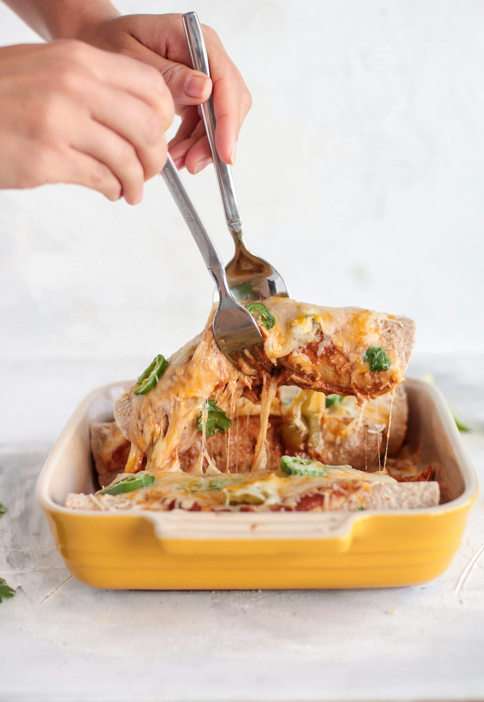
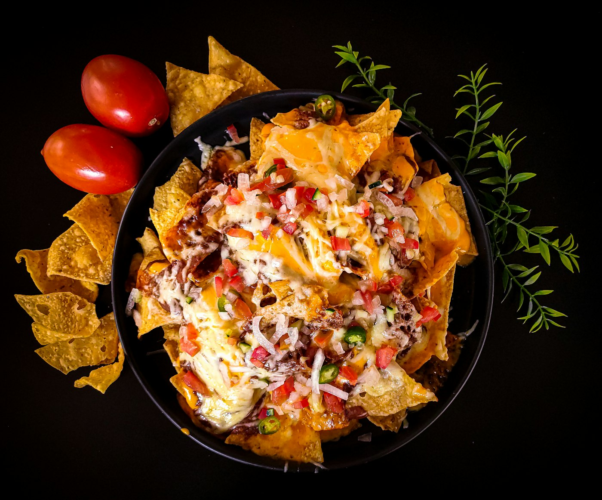

01
Street Tacos de Asada
Grilled steak piled onto warm tortillas with nothing but white onion and cilantro — the way street tacos are meant to be. Simple, smoky and made to order.
Find them on the menu →Five Points Corner · Davenport, Iowa
Authentic family cocina on the Five Points corner —
street tacos, birria and tamales made the way home tastes.
Our Story
Don Juan Mexican Cocina sits on the busy Five Points corner in Davenport's North End — in the former Azteca Express space. The restaurant is named after owner Guadalupe Bernal's paternal grandfather, and it is a true family business through and through.
Six members of the Bernal family run it together: Guadalupe; her father Ignacio, who spent about thirty years with the Azteca restaurants; her mother Araceli; her sister Carolina; and brothers Emilio and Juan. Street tacos, enchiladas, tamales and birria are their classics — served with homemade salsa, house margaritas, and a drive-up window for when you're in a hurry.
See the signatures →
The Signatures
Grilled steak piled onto warm tortillas with nothing but white onion and cilantro — the way street tacos are meant to be. Simple, smoky and made to order.
Find them on the menu →
Grilled steak and melted cheese pressed in a flour tortilla until golden — best chased with our homemade salsa and a house margarita.
Find them on the menu →
Traditional Mexican-style enchiladas under melted cheese and salsa — one of the family classics that built Don Juan's reputation.
Find them on the menu →
Authentic nachos piled high with cheese, fresh pico and your choice of meat — made for sharing across the table, with homemade salsa on the side.
Find them on the menu →From the Cocina


Order from the car and roll on — quick service when you're short on time.
Pull up a chair on the Five Points corner, or grab it to go.
Our signature margaritas — the regulars order them by name.
Six members of the Bernal family in the kitchen and on the floor.
Made fresh in our kitchen — it comes with the chips, every time.
1902 N Division St — easy to find in Davenport's North End.
Word of Mouth
Visit Us
| Sunday | 11:00 AM – 9:00 PM |
|---|---|
| Monday | 11:00 AM – 9:00 PM |
| Tuesday | 11:00 AM – 10:00 PM |
| Wednesday | 11:00 AM – 9:00 PM |
| Thursday | 11:00 AM – 9:00 PM |
| Friday | 11:00 AM – 10:00 PM |
| Saturday | 11:00 AM – 10:00 PM |